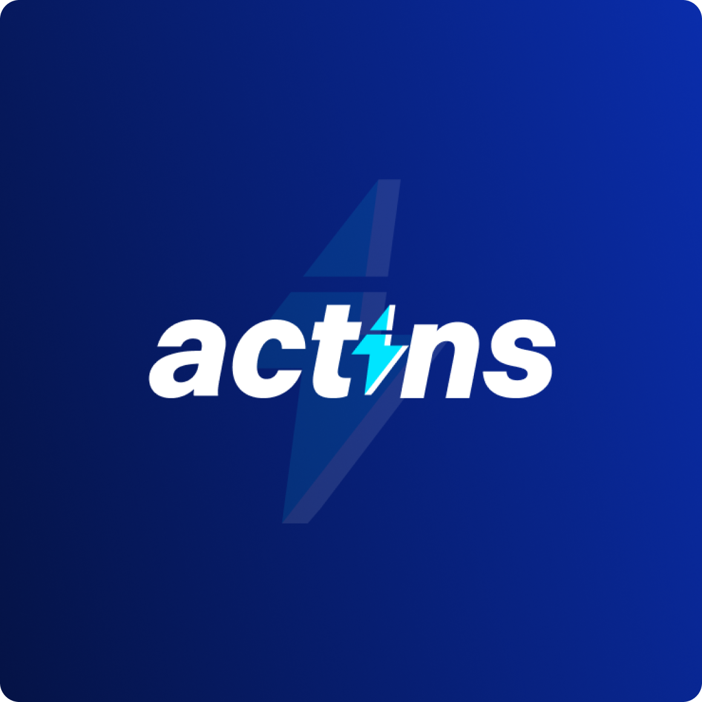
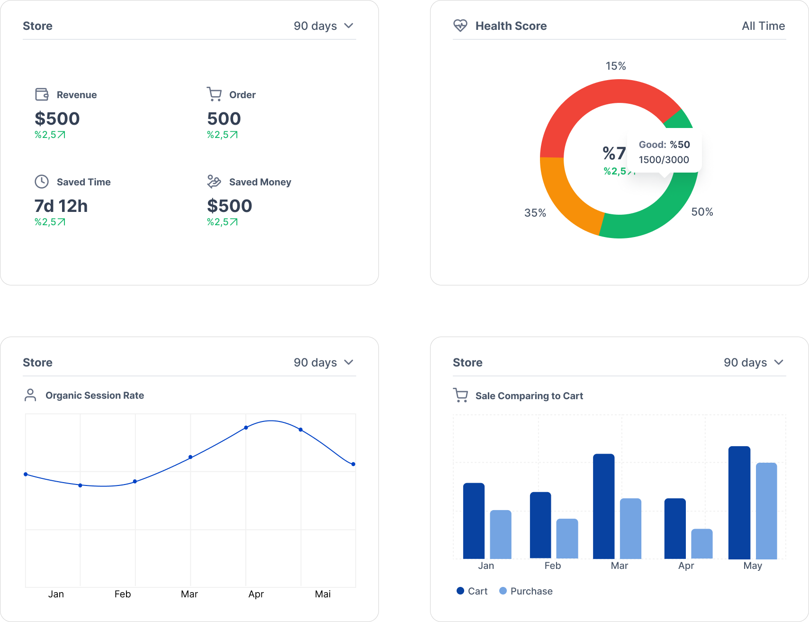
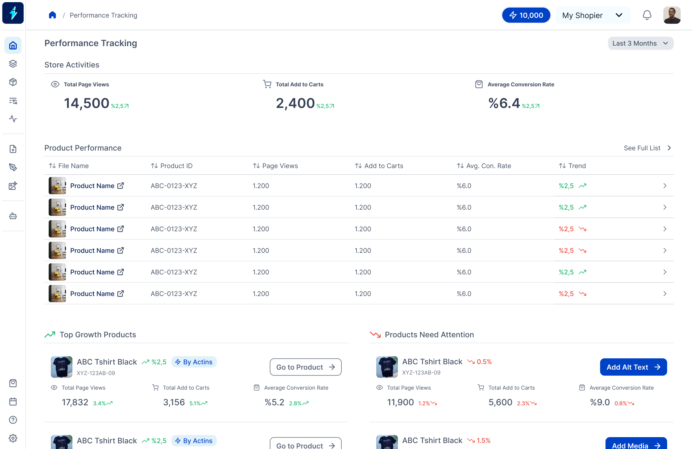
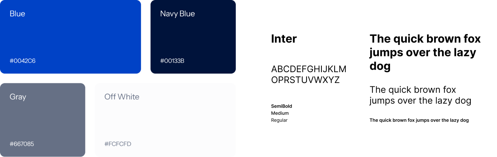

ACTINS AI

E-commerce Automation
AI Agent
Actins — AI-Powered Platform for E-commerce Automation
A tool that helps online sellers automate content creation, optimize products, and manage their stores more efficiently.
Client
ACTINS AI
Date
2024 - 2026
My Role
Research
Product Design
Marketing Design
Problems
Complexity of AI Workflows
Big Data & Cognitive Load
Unfamiliar AI Outcomes
Goals
Navigating Complex Workflows With Confidence
Balancing Depth & Simplicity
Guiding Users to Important Points
Screens
Showcase Video
Created in Figma, animated in Jitter.
Design Approach
Designing for Clarity
Data Visualisation
Pie, bar, and line charts effectively highlight key data points, making it easy for users to navigate and understand the information. These visuals focus on the most significant aspects, allowing for quick scanning and comprehension.
Focusing on What Matters
Content and layouts were simplified to direct users’ attention to the most important actions and information. Visual hierarchy, spacing, and color were used strategically to create focus and reduce cognitive load

Flat & Simple Design
Accessible
A flat visual language was implemented to reduce cognitive friction and make complex AI features easier to explore.
Understandable
Each interaction was simplified to reduce cognitive load and support intuitive navigation through data-driven workflows.
Clean
A minimal visual style keeps the interface lightweight and modern.

Design System
Scalable
I selected blue as the primary color to reflect trust, reliability, and innovation—qualities that are essential for an AI-powered platform like Actins. Blue also resonates strongly within the tech and SaaS space, creating a familiar yet modern identity that feels professional without being overwhelming.
Subtitle
I selected blue as the primary color to reflect trust, reliability, and innovation—qualities that are essential for an AI-powered platform like Actins. Blue also resonates strongly within the tech and SaaS space, creating a familiar yet modern identity that feels professional without being overwhelming.
Design System
Brand Identity
I selected blue as the primary color to reflect trust, reliability, and innovation—qualities that are essential for an AI-powered platform like Actins. Blue also resonates strongly within the tech and SaaS space, creating a familiar yet modern identity that feels professional without being overwhelming.
Typography
I selected blue as the primary color to reflect trust, reliability, and innovation—qualities that are essential for an AI-powered platform like Actins. Blue also resonates strongly within the tech and SaaS space, creating a familiar yet modern identity that feels professional without being overwhelming.
